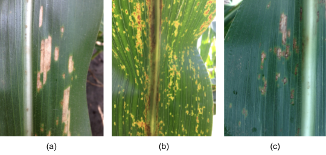
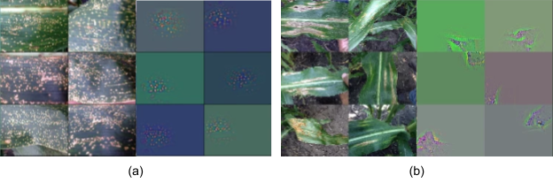
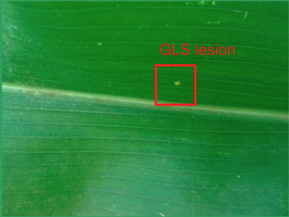
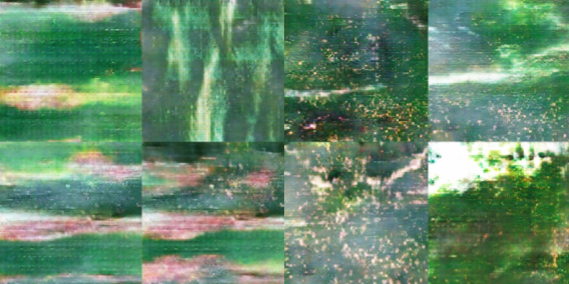

“深度学习”深度学习模型
有趣的观点：在应用深度学习之前，我们应该“深度学习”我们的深度学习模型。本文翻译于 CLIMATE公司的机器学习研究部门主管 Wei G.的一篇博文。
越来越多的公司正在他们的业务中建立和应用深度学习模式。在这些模型投入生产之前，应该考虑几个实际问题。Wei G.博士提出两种情况：1）构建一个完全适用于培训和验证数据的模型，但在真实场景中部署模型后，它不会很好地运行。2）与传统的机器学习模型相比，性能并不是非常出色。虽然后一种情况会让你重新考虑是否要在这方面投入更多资源，但前一种情况的风险更大，而且在将模型投入生产之前可能会根本意识不到。
构建健壮的深度学习模型
要建立一个强大的深度学习模型，它可能远远不止是用自己的数据集使用一些现有模型（例如Inception v3，resnet，LSTM等）进行训练或者微调。这些模型可以作为基础。但是，即使对于诸如图像分类或目标检测等研究最多的问题，微调这些模型也只是第一步。还有一些重要的问题需要考虑。
第一件也是最重要的事情是，无论拥有多少数据，用于模型训练的数据分布是否与真实场景中的数据分布相同。Wei G.博士提到他在一年前参加的Andrew Ng的一次会谈中，Andrew Ng强调了这点。虽然这是有道理的，但在现实世界中可能并非如此。我们甚至可能不知道真实数据的分布情况，分布也可能会发生变化。
用于实时作物病害鉴定的深度学习
Wei G.博士以农作物病害鉴定研究为例。通过从现场拍摄的照片实时诊断疾病。有两个主要来源可能会导致分配差异。第一个是人们如何拍照。用户拍照的方式可能与我们训练的采用的照片拍摄方式不同。许多卷积模型（CNN）不擅长处理比例和旋转差异。如果差异很大，那么这将是一个无法通过数据增强或通过利用基于变换的网络（如空间变换网络或变形卷积层）来解决的问题。解决这个问题的一种简单而有效的方法可能会是尽可能多的收集多样数据并限制拍摄的方式。

图1（a），（b）和（c）是3种不同类型的玉米杂种。灰斑病（GLS）症状（在相似的疾病阶段）在这些杂交种上看起来非常不同。而我们的训练数据通常具有有限数量的品种。
第二个更具挑战性的问题是我们的只拥有一部分类别（并不能代表所有的类别）的数据。在疾病鉴定实例中，当我们收集玉米疾病图像时，图像仅来自某些类型的玉米种子。品种间的疾病症状可能看起来非常不同（如图1所示）。我们能将这样训练的模型推广应用到大多数甚至全部的品种吗？
答案是肯定的，但可能需要一些领域知识。原始图像空间中的数据分布不同，但这并不意味着它们在其他空间中必须有所不同。如果我们找到训练训练数据能够代表整体的样本空间，我们可以在这个空间中建立模型。另一种方法是使学习功能更加通用，而不是针对多个混合或特定的数据集。这可以通过强制某些正则化或部分设计特征来完成，而不是让模型自己学习特征。

图2：学习功能的两个示例。（a）中的学习特征更相关，而（b）中的特征在一般的数据集中不太有用。
另一个有趣的问题是是否有必要添加额外类。例如，除了不同的疾病，我们也需要分别健康叶和非叶。非叶类可以使用多种非叶图片进行训练。然而，健康叶类更棘手。因为是它不是一个专有的类。更具体地说，病叶也可能含有健康的部分（图3）。softmax分类器的工作方式是区分性和排他性的，即最高分的分类将被选为最终分类。每当健康部位比患病部位更多地激活神经元时，叶子就会被分类为健康。

图3：在典型的分类环境中，叶子看起来比任何疾病都“更健康”。在这种情况下，检测（detection）可能更有用。
检测（detection）可能是解决上述问题的一个很好的解决方案。这导致了另一个问题：检测（detection）与分类（classification）。检测（detection）确实可以识别和定位图像中的多个对象，但这也是更加困难的问题，所以目前，准确性不高。此外，像R-CNN，SSD，R-FCN或YOLO等当今许多流行框架的确需要包围盒的前提，这个获取是非常昂贵的。此外，与像ImageNet，COCO等数据集中的对象不同，许多对象可能没有明确定义的形状。模拟给定部分对象（图像中的子窗口或提议）的边界框的条件概率的意义不大。虽然有办法解决这个问题，但是工作会异常复杂，也需要很大的努力。
一些不那么重要但也很常见的挑战包括：如果一个类内的多样性过大，该怎么办？将类进一步划分为子类是否有益于特征更加一致？如果某些类的训练样本少得多，该怎么办？当某些错误分类比其他错误更难以容忍时，处理最佳方法是什么？这些只是需要考虑的许多实际问题中的一小部分。
GAN 和 类似改进变体（Wasserstain-GAN 等）的普及为我们提供了一种新的数据分布模型：包括合成新数据和利用大量未标记数据。尽管半监督式学习需要进一步研究，但尝试使用这些模型以查看未标记数据是否提升了模型的性能可能会有所帮助。此外，Geoffrey Hinton的CapsNet引起了很多关注。据称，通过明确建模检测到的特征的关系来训练网络需要更少的训练数据。虽然这是一种有趣的新方法，但CapsNet仍处于探索阶段，需要在更复杂类型的图像上进一步测试。

图4：GAN生成的图像示例。它以不同于传统数据增强（如随机缩放，裁剪等）的方式丰富了数据集。
尽管CNN在不同视觉问题中都能够成功地提取有用特征，但时序数据并非如此。时序数据更依赖于问题，并且每种类型的数据都可能具有自己的特征。在语言处理中实现良好结果的LSTM并不一定意味着它可以成功地用于其他类型的时序数据，并且添加更多隐藏节点或堆叠多个LSTM层可能没有帮助。构建正确的架构可能是第一个关键而且耗时的步骤。
关于人工智能有争议（？原文为buzz），人们有兴趣为不同的问题尝试深度学习模型。但是，要解决实际问题，请始终尽量使用传统的机器学习方法（除非它们是典型的DL问题）。在很多情况下，它可以更好地了解深层神经网络是否是一个有前途的方向，它可以作为基准模型。如果传统模式同样好，并且功能更易于理解，则应该不希望部署仅用于市场营销目的的黑盒（或灰盒）模型。或者如果你这样做，可能需要花时间来深入学习我们所采用的深度学习模式。